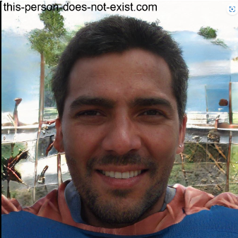

Personas
Introdução
Personas são arquétipos criados para representar grupos de usuários típicos que ajudam os designers e desenvolvedores a visualizar o público-alvo de seus projetos de uma maneira mais tangível e humanizada. As personas são fundamentais no design de interação, como discutido por Simone Diniz Junqueiro Barbosa e Bruno Santana da Silva em sua obra "Interação Humano-Computador" (2010). Esses arquétipos são baseados em dados reais coletados por meio de pesquisas com usuários, e cada persona encapsula as características essenciais de um segmento significativo do público-alvo.
Metodologia
Conforme Barbosa e Silva (2010), a utilização de personas envolve métodos qualitativos e quantitativos:
- Pesquisa Qualitativa: Entrevistas detalhadas e grupos focais revelam motivações profundas e expectativas dos usuários.
- Pesquisa Quantitativa: Análises estatísticas ajudam a entender as características demográficas e comportamentais dos usuários.
- Análise de Segmentação: Essencial para definir grupos específicos de usuários representados por cada persona.
Como usar Personas
Desenvolvimento de Personas: O processo começa com a coleta intensiva de dados através de entrevistas, observações, e análise de dados existentes. Após a coleta, os dados são analisados para identificar padrões que fundamentam a criação das personas.
Aplicação no Design e Desenvolvimento:
- Definição de Requisitos: As necessidades e desejos das personas orientam a definição de requisitos para o projeto.
- Design da Interface: Utiliza as características das personas para guiar o design, focando na usabilidade e acessibilidade.
- Avaliação de Usabilidade: Personas são usadas para formular cenários de teste que simulam o uso real do sistema.
Benefícios das Personas
Os benefícios das personas são muitos, ela garante que a avaliação se concentre nas necessidades reais dos usuários, levando a tomar decisões certas em relação ao site, possibilitando a personalização. Facilita também a comunicação dos resultados da avaliação com stakeholders e membros da equipe, através de representações concretas dos usuários. Usando tomada de decisões baseada em dados é possível fornecer uma base sólida para decisões de design e desenvolvimento, baseadas nas necessidades e expectativas reais dos usuários. Os avaliadores eles se colocam no lugar do usuário e compreendem melhor suas frustrações, crucial para ter um site realmente útil e agradável. Ao focar em problemas reais identificados pelas personas, é possível reduzir retrabalhos e correções de funcionalidades que não atendem às necessidades dos usuários, economizando tempo e recursos.
Perfis
Segundo Barbosa e Silva (2011), o elenco de personas deve ter entre três e doze personas para articular a população de usuários.
No caso deste projeto, temos três personas e uma antipersona.
Na tabela 1 estão as características gerais usadas na criação das personas derivada do perfil do usuário.
Tabela 1 - Características das personas
| Características | Descrição |
|---|---|
| Idade | Entre 18 a 34 anos (Jovens/Adultos) |
| Escolaridade | Ensino superior incompleto |
| Gênero | Maioria masculino |
| Nível de experiência em tecnologia | Faz tudo sem ajuda |
| Residência | Luziânia |
| Frequência que utiliza o site | Sempre |
| Com qual frequência utiliza meios digitais para consultar linhas de ônibus, recarregar cartão, etc… | Frequentemente |
| Frequência de compras online | Frequentemente |
| Conhecimento que podia realizar compras de passagens com antecedência | Não |
Fonte: Renan Araújo e Gustavo Alves
Personas
Para conseguir as imagens, foi utilizado o site This person does not exist baseado em inteligência artificial. Nas Tabelas 2, 3, 4 e 5 estão a descrição das personas
- Lucas
Tabela 2 - Persona Lucas
| Nome | Lucas |
| Foto | |
| Descrição | Lucas, 23 anos, estudante de ensino superior, reside em Luziânia |
| Tipo | Persona primária |
| Relacionamentos | Lucas tem um forte vínculo com sua família e amigos próximos. Além disso, ele estabeleceu uma relação significativa com Henrique, seu principal professor durante a graduação, que o influenciou positivamente em sua trajetória acadêmica e pessoal. |
| Informações | Lucas é um estudante universitário residente em Luziânia, cursando seu ensino superior, ainda não concluído. Com 23 anos, ele é uma pessoa dinâmica e independente, com habilidades sólidas em tecnologia. Ele utiliza frequentemente meios digitais para suas atividades diárias, incluindo consultas online, compras e algumas interações com serviços de transporte público. |
| Objetivos | Lucas deseja aproveitar ao máximo a conveniência e eficiência dos meios digitais em sua vida cotidiana. Ele busca encontrar informações rapidamente, realizar compras online de forma segura e acessar serviços de transporte público de maneira eficiente. Lucas espera que os sites e aplicativos que utiliza sejam intuitivos, com interfaces simples e informações claras e precisas, facilitando suas interações online. |
| Tarefas | Utilizar o site frequentemente, fazer compras online, consultar informações sobre linhas de ônibus e recarregar cartão ocasionalmente. |
| Habilidades | Habilidade em resolver problemas com tecnologia sem ajuda, explorar opções em sites até encontrar o que procura. |
| Expectativas | Espera conveniência e eficiência ao utilizar meios digitais. Pode esperar encontrar as informações ou realizar as tarefas de forma rápida e intuitiva. |
| Requisitos | Interface simples e intuitiva, informações claras e precisas, opções de compra online acessíveis e seguras. |
Fonte: Renan Araújo e Gustavo Alves
- Pedro
Tabela 3 - Persona Pedro
| Nome | Pedro |
| Foto | |
| Descrição | Pedro é um estudante universitário de 25 anos que vive em Luziânia. Ele é proativo, autodidata e valoriza a praticidade proporcionada pela tecnologia em sua rotina agitada. |
| Tipo | Persona primária |
| Relacionamentos | Familiares, amigos e namorada |
| Informações | Pedro é um jovem masculino com ensino superior incompleto e um forte domínio de tecnologia, capaz de resolver problemas em plataformas digitais sem ajuda externa. Ele reside em Luziânia e busca maneiras de simplificar suas tarefas diárias por meio da tecnologia. |
| Objetivos | Pedro deseja facilitar o acesso à informação, realizando buscas rápidas e precisas. Almeja realizar compras online de forma segura e acessível, assim como utilizar serviços de transporte público de maneira eficiente e simplificada. Para Pedro, é essencial aperfeiçoar suas habilidades tecnológicas por meio de recursos educacionais online, complementando sua autodidatismo |
| Tarefas | Pedro trabalha meio período em uma loja de conveniência, onde atende os clientes, organiza estoques e realiza vendas. Além disso, ele frequenta a faculdade, participa de grupos de estudo e se dedica ao seu projeto de pesquisa. Nos momentos de lazer, Pedro pratica esportes ao ar livre e dedica tempo à leitura de livros sobre tecnologia e inovação. |
| Habilidades | Pedro possui habilidades sólidas em tecnologia, sendo autodidata e capaz de resolver problemas em plataformas digitais sem depender de ajuda externa. Ele é determinado e proativo na busca por soluções para seus desafios tecnológicos. |
| Expectativas | Pedro busca uma experiência digital fluida e sem complicações, permitindo-lhe encontrar informações e realizar tarefas de maneira rápida, sem obstáculos ou dificuldades. |
| Requisitos | Pedro busca interfaces intuitivas, informações claras e precisas, bem como opções de compra online seguras e acessíveis. Ele espera encontrar soluções tecnológicas que facilitem suas tarefas diárias e melhorem sua qualidade de vida. |
Fonte: Renan Araújo e Gustavo Alves
- Mariana
Tabela 4 - Persona Mariana
| Nome | Mariana |
| Foto | |
| Descrição | Mariana é uma jovem de 29 anos, profissional autônoma que trabalha como designer gráfica e vive em Luziânia. Ela é criativa, detalhista e preza pela eficiência em todas as ferramentas que utiliza para trabalho e vida pessoal. |
| Tipo | Persona primária |
| Relacionamentos | Mariana mantém uma relação próxima com colegas de trabalho e amigos, além de uma forte conexão com sua família, especialmente sua irmã com quem compartilha muitos interesses. |
| Informações | Mariana, com ensino superior completo, tem uma rotina dinâmica que balanceia entre trabalho remoto e presencial. Sua experiência com tecnologia é avançada, permitindo que ela navegue com facilidade por diversas plataformas digitais. Ela vive em Luziânia, mas frequentemente viaja para a capital para reuniões e compromissos de trabalho. |
| Objetivos | Mariana busca maximizar sua produtividade usando tecnologias que agilizam seu trabalho e facilitam a gestão de seu tempo. Ela deseja acessar rapidamente informações sobre transportes públicos para otimizar seus deslocamentos frequentes. |
| Tarefas | Utilizar o site para planejar suas viagens, comprar passagens de forma antecipada, e buscar informações sobre horários e rotas dos ônibus. |
| Habilidades | Excelente em adaptar-se a novas tecnologias e ferramentas digitais, eficaz na gestão de seu tempo e recursos. |
| Expectativas | Espera que o site ofereça uma experiência fluída e intuitiva, com informações atualizadas e precisas sobre horários e rotas, e um sistema de compra de passagens simples e seguro. |
| Requisitos | Interfaces de usuário claras e acessíveis, informações precisas sobre itinerários e disponibilidade de assentos, opções de pagamento seguras e confiáveis. |
Fonte: Renan Araújo e Gustavo Alves
- Rafael
Tabela 5 - Persona Rafael
| Nome | Rafael |
| Foto |  |
| Descrição | Rafael, 31 anos, é um empresário que possui uma pequena loja de eletrônicos em Luziânia. Ele é prático e busca sempre a eficiência em seus processos, tanto pessoais quanto profissionais. |
| Tipo | Persona secundária |
| Relacionamentos | Rafael tem um círculo de amigos com quem compartilha interesses em tecnologia e inovações. Ele é casado e pai de dois filhos. |
| Informações | Rafael possui ensino superior completo em Administração de Empresas e é muito envolvido com a comunidade local, participando ativamente de eventos e iniciativas empresariais. Sua familiaridade com tecnologia é alta, facilitando sua navegação e utilização de plataformas digitais para negócios e lazer. |
| Objetivos | Rafael procura maneiras de reduzir o tempo gasto em tarefas rotineiras utilizando soluções digitais. Ele também está interessado em recursos que o ajudem a gerenciar melhor seu tempo, para que possa se dedicar mais à família e ao lazer. |
| Tarefas | Buscar horários flexíveis de ônibus para viagens de negócios ou lazer, comprar passagens com facilidade e gerenciar suas reservas de forma eficiente. |
| Habilidades | Capaz de identificar e utilizar as melhores ferramentas tecnológicas para otimizar seus processos de trabalho e vida pessoal. |
| Expectativas | Rafael espera que o site seja confiável, com um processo de compra clara e segura, e que ofereça suporte eficiente quando necessário. |
| Requisitos | Sistema de reservas eficiente, informações detalhadas sobre serviços, suporte ao cliente acessível e eficaz. |
Fonte: Renan Araújo e Gustavo Alves
Bibliografia
Barbosa, S. D. J., & Silva, B. S. (2010). Interação Humano-Computador. Editora Campus.
The Power of User Personas in UX Design, disponível em: https://www.linkedin.com/pulse/power-user-personas-ux-design-jo-ionescu-ce3nf/, Acesso em: 20/04/2024
This Person Doest Not Exist, disponível em: https://this-person-does-not-exist.com/en. Acesso em: 20/04/2024.
Histórico de Versões
| Versão | Data | Descrição | Autor(es) | Revisor(es) |
|---|---|---|---|---|
| 1.0 | 28/04/2024 | Personas | Renan Araújo Gustavo Alves |
Alana Gabriele |
| 1.1 | 03/05/2024 | Finalizando Personas | Renan Araújo Gustavo Alves |
Alana Gabriele |